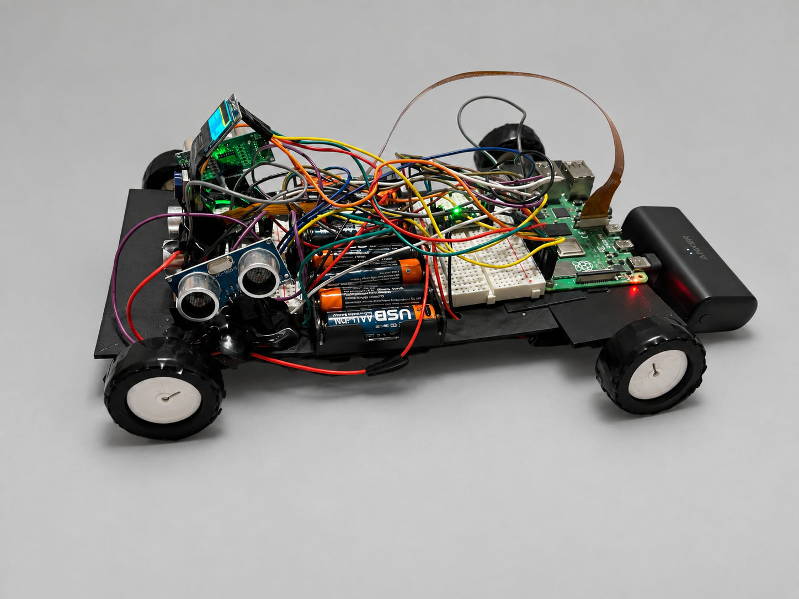
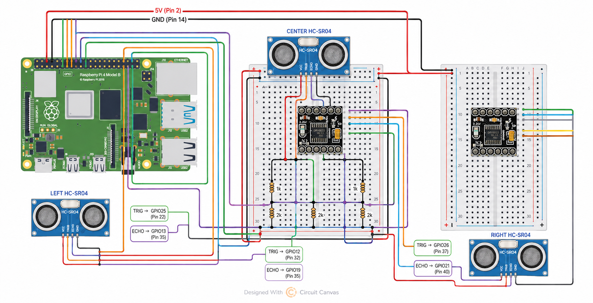
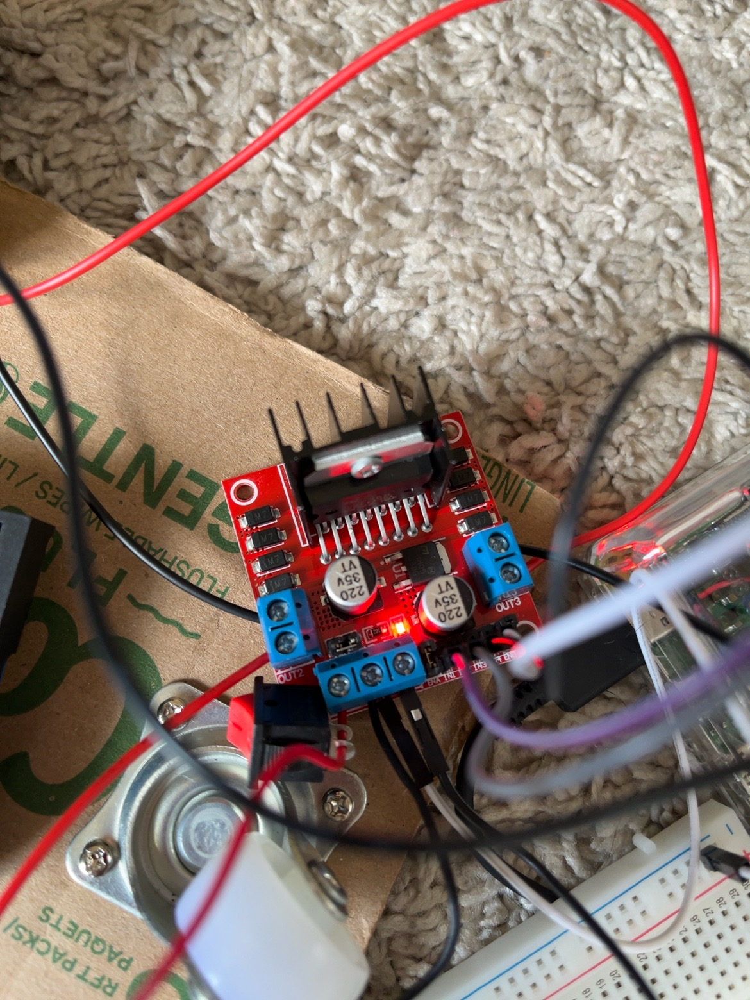
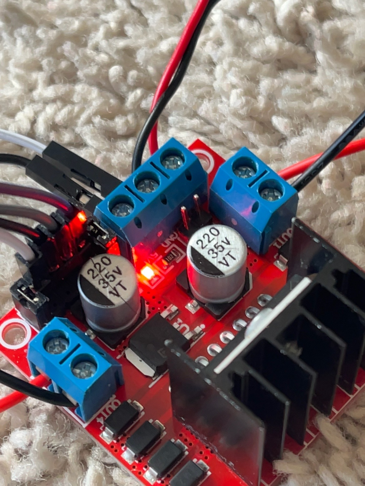
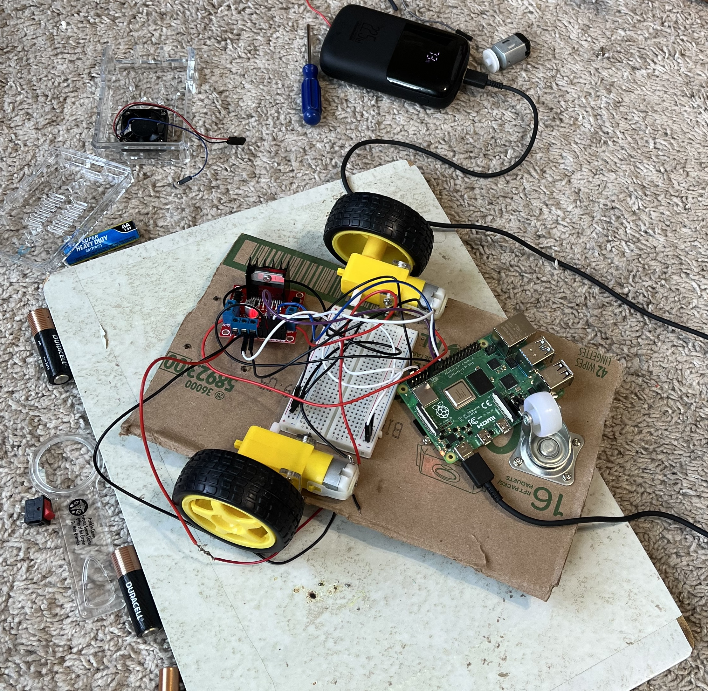
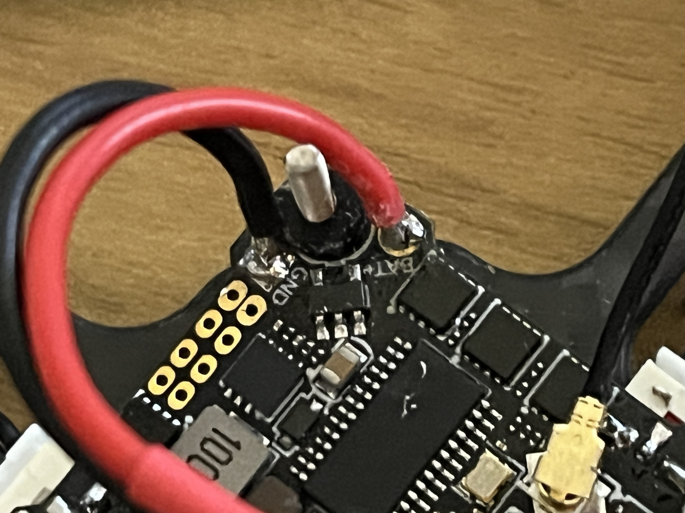
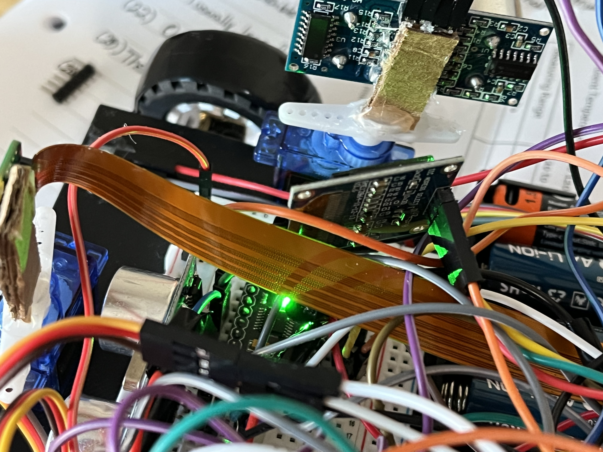
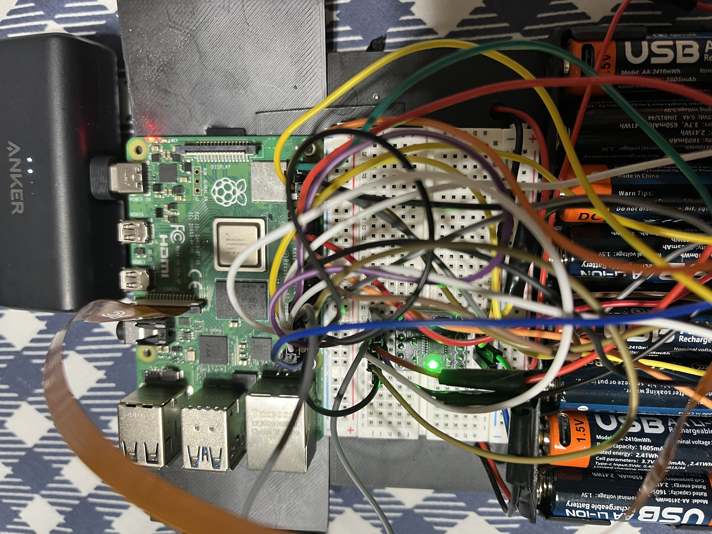
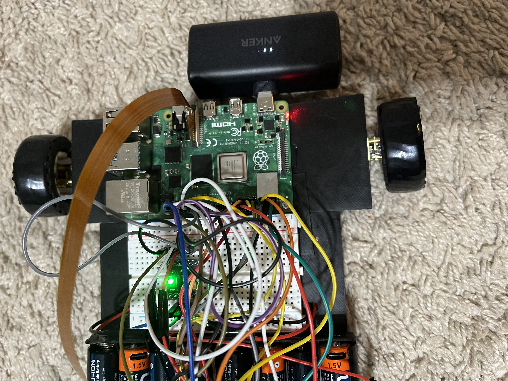

Raspberry Pi
A Raspberry Pi 4B runs the Python programs that read sensor measurements, make navigation decisions, and send commands to the motors.
ROBOTICS • PYTHON • AUTONOMOUS SYSTEMS
A Raspberry Pi-powered four-wheel robot that can sense obstacles, control its own movement, and make basic navigation decisions without a human driver.
GitHub repository ↗
OVERVIEW
Building a robot that moves is relatively easy. Building one that can decide where it should move next is much harder.
I built RobotCar as an experimental platform for learning how autonomous machines connect sensing, software, and physical movement. The car uses a Raspberry Pi to control four motors while three ultrasonic sensors measure the space in front of and beside it. The software uses those measurements to decide whether to continue forward, stop, reverse, or turn toward a clearer path.
The project also includes manual keyboard control, which lets me test the drivetrain directly and temporarily take control even while autonomous mode is running.
HIGHLIGHTS
HARDWARE
RobotCar combines a small Linux computer with motor-control electronics and distance sensors.
A Raspberry Pi 4B runs the Python programs that read sensor measurements, make navigation decisions, and send commands to the motors.
Four DC gear motors drive the chassis. Two DRV8833 motor drivers provide the interface between the Raspberry Pi's control signals and the motors.
Left, center, and right HC-SR04 sensors measure nearby obstacles and give the software a simple view of available space.
Two motor battery packs provide power for the drivetrain, separating motor demand from the controller's logic.

The combination turns the car into a physical computing system where software decisions immediately become real movement.
AUTONOMY
The first autonomous version uses a straightforward sense → decide → move loop.
This creates basic autonomous obstacle avoidance without requiring a remote driver. A manual override is also available while autonomous mode is active.
CONTROL
Before testing autonomy, I built keyboard controls so each movement could be tested independently. Manual driving became an important debugging tool: it separates motor and wiring problems from navigation-logic problems.
DEMONSTRATION
Watch a short demonstration of the vehicle moving and responding to its environment.
If the embedded player does not load, watch the demonstration on YouTube ↗.







ENGINEERING
Motor layerPython controls the four DC motors through the two DRV8833 drivers.
Sensor layerThree HC-SR04 sensors provide left, center, and right distance measurements.
Control layerManual driving verifies that motor direction and steering work correctly.
Autonomy layerThe navigation program combines sensor readings with movement rules to avoid obstacles and choose a direction.
The repository includes separate programs for motor testing, ultrasonic-sensor testing, manual driving, and autonomous driving, along with build, wiring, setup, and parts documentation.
DEVELOPMENT
Distance sensors can tell the robot that something is nearby, but they cannot tell it what that object is or whether an open-looking area is actually safe to drive across.
The next stage is camera-based navigation: identifying driveable floor and making better path decisions using visual information rather than relying entirely on three distance measurements. That moves the project from reactive obstacle avoidance toward a more complete autonomous-navigation system.
TECH STACK
REFLECTION
RobotCar taught me that autonomy is not one piece of code. It is a chain of systems that all have to work together.
A navigation algorithm can be correct while a motor is wired backward. A sensor can produce measurements while still giving unreliable information to the decision logic. Behavior that looks simple, such as turning away from an obstacle, requires sensing, timing, motor control, and software decisions to happen in the right order.
Building the car has given me experience debugging at the boundary between hardware and software, where changing a wire, a sensor position, or a few lines of Python can completely change how the physical system behaves.